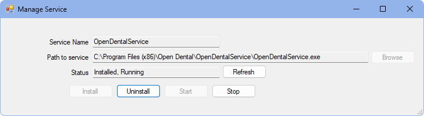

Open Dental Service
The Open Dental Service is used to run background processes necessary for Open Dental.
In the Service Manager, double-click OpenDentalService.
Note: The OpenDentalService will only list in the Service Manager on the server computer. The service should only be installed on the server, since additional installations on workstations may cause conflicts. The OpenDentalService should only be installed and running on one server for offices that are using replication.
This service is required for customers using Email, eServices or customers utilizing certain third parties.
The OpenDentalService does the following:
- Creates an alert:
- if the number of current MySQL connections is greater than the max_connections variable in the my.ini file.
- when payments are made from the Patient Portal.
- when a Web Sched New Patient appointment is created.
- when a Web Sched Recall appointment is created.
- when a secure email message is received.
- when a web form is ready to be retrieved.
- Downloads email from servers based on the Inbox Receive Interval set in Email Setup.
- Runs aging at Automated aging run time or Aging Service Time Due, scheduled in Preferences.
- Imports clearinghouse reports if Receive Reports by Service is checked in the E-Claims window.
- Send patient aging information to TSI Collections.
- Sends information from Podium if Use service to send invitations is checked in the Podium program link.
- Runs CC Recurring Charges.
- Adds charges for Payment Plans based on Pay Plan run time scheduled in Preferences.
- Adds Automated Repeating Charges.
- Runs various CareCredit processes.
- Automatically retrieves Web Forms.
Installing the OpenDentalService
The OpenDentalService is typically installed on the server computer upon initial installation of Open Dental.
Sometimes the OpenDentalService must be installed manually due to permission restrictions on the server.
To manually install the OpenDentalService:
- In the Main Menu, click Tools, Misc Tools, Service Manager.
- Click Add.
- Click Browse and select the OpenDentalService.exe. This is typically located in \Program Files (x86)\OpenDental\OpenDentalService\.
- Click Install.
- Enter the configuration settings.
- Click OK to close the Configuration window.
- If the installation is successful, the status will change from Not Installed to Installed, Running.
Note:
- Offices utilizing the Open Dental Service for CC Recurring Charges and Repeating Charges or Payment Plans, may want to schedule Recurring charges run time after Repeating charges run time and Pay Plan run time when setting up Preferences to ensure charges are posted before attempting payment. Not doing so may cause payments not to be processed if there is no charge (or balance) on the patient's account.
- If using a cloud-managed database system, enter the PEM filepath in the SkySQL PEM field when entering configuration settings. File must be accessible from all workstations.